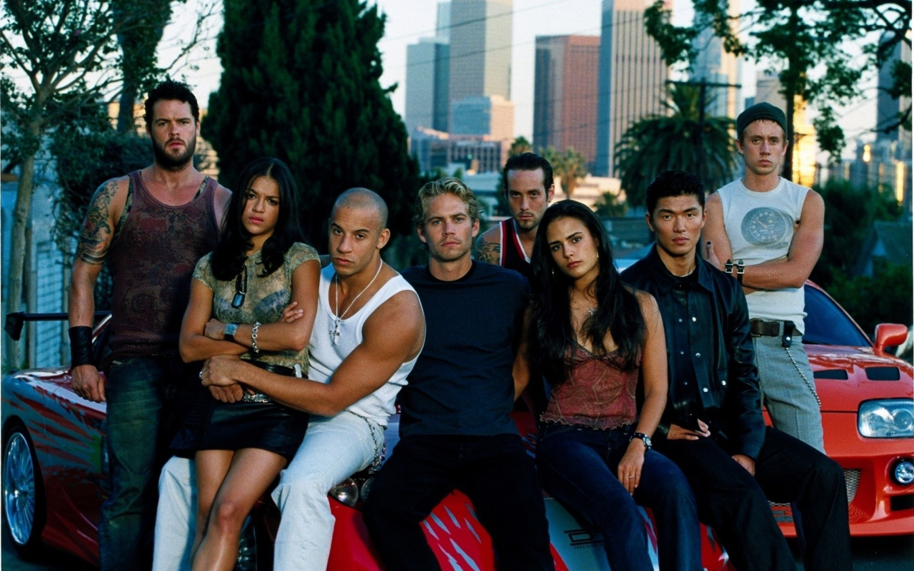

Як працює тег "b"
Як працює тег "i"
Як працює тег "strong"
Як працює тег "em"
Як працює тег "small"
Як працює тег "mark"
12:00 Як працює тег "time"

"wbr" переносить слово в тих місцях де він присутній
Як працює тег "big"
Як працює тег "center"